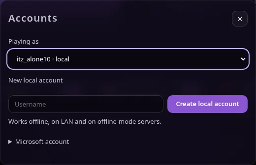

News · · v1.7.0
Vanta 1.7: a calmer, more consistent launcher
A cleaner PLAY screen, an Accounts window, one look across every tab, a smaller crash card, and Mac and Linux fixes.
Vanta 1.7.0 is out for Windows and macOS. Press Update in Vanta's top bar to get it.
One screen for playing
PLAY now has one main card: your account, the instance, a big PLAY button and memory. Below it are Jump back in, your friends and a short row of servers.

Everything else has a place
- Click your name to open Accounts, where you switch or add a local account.
- Add instance and version details are in INSTANCES. Saved and recent servers are in SERVERS. What's new and the background picker are in SETTINGS.
- The log is a drawer: press Logs when you need it.

One look
Every tab now uses the same cards, buttons, spacing and text sizes, and one set of icons instead of emoji. Text is shorter. Arrow keys, Home and End move between tabs.
A smaller crash card
When Minecraft crashes, the card says what happened in one line and gives one main button: Check mods (or Show log for vanilla). Copy, Get help and Open folder are under More.

Mac and Linux fixes
- Adding an instance folder and choosing a background now open a real file picker on Mac (and on Linux with zenity or kdialog).
- On a Mac, a local server that stopped no longer shows as running.
- Errors that used to be hidden are now written to the log or shown.
The Mac builds are still not tested on a real Mac. Screenshots use demo data.